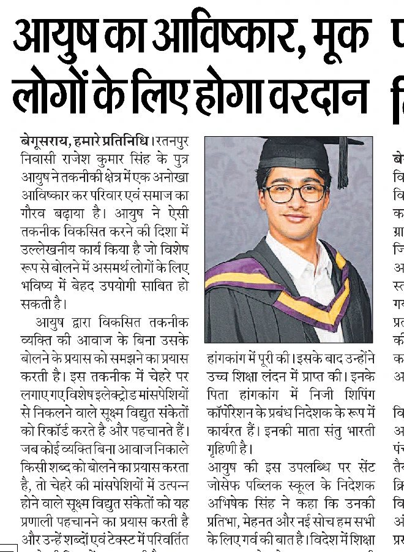
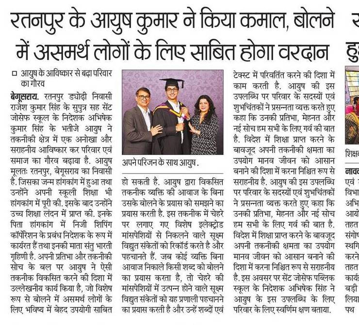
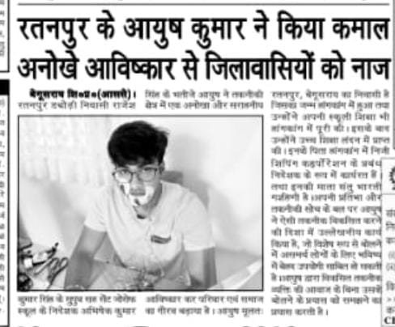
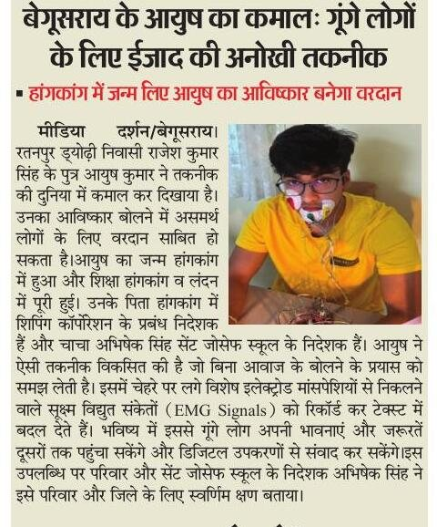
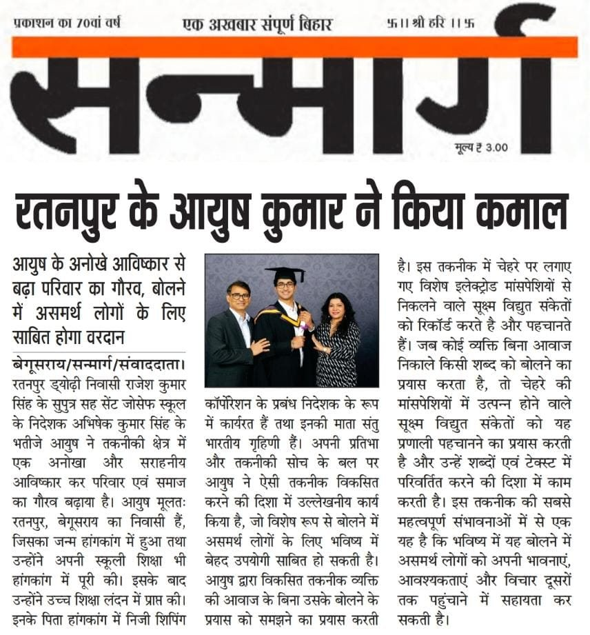
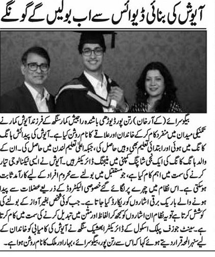

I cannot believe how much we want to communicate, and how little we are able to.
I want to augment the way we interact with computers and with other humans.
Thinking is faster than speaking, and speaking is faster than typing. Every computer is limited by the slowest way a human can get words out.
The history of mankind is people finding better ways to get what's in one head into another: speech, writing, printing, the telephone, the internet. Machines have been moving closer and closer to the source. Computers once filled a room and you fed them punched cards. Then they sat on a desk and you typed. Then they sat in your pocket and you touched them. Now you can talk to them, but only when nobody else is around.
The end of that line is the brain. Non-invasive brain-computer interfaces are still a bit away. Invasive ones need surgery, and surgery won't scale.
Silent speech is the step before that, and it has only just become possible, because AI can finally make sense of a signal that faint. You mouth it, it's on the screen, nobody around you hears anything. That's Talk Without Talking, and it's what I work on now. It works on my face today, for a small set of words. I want 8 billion people to be able to use it, and I want to spend the next 15 years getting there.
After my first demo in September 2026, Hindustan, one of India's most-read Hindi papers and the sister paper of the Hindustan Times, ran the story online in its national section (read it in English).
Six newspapers printed it, in Hindi and Urdu. They called it a boon for people who can't speak, which took me by surprise: I'd only ever pitched it as a new way to work with computers. My post about it.

Hindustan
Prabhat Khabar
Aaj
Media Darshan
Sanmarg
Qaumi TanzeemSilent speech. On 24 September 2026 I posted the first demo: six phrases, 90.5% right, typing live into Claude Code, Gmail and WhatsApp. Electrodes taped to my face, no sound, checked by a microphone. The LinkedIn post went viral: over 116,000 impressions and 1,200 reactions.
Rockets. I was super interested in rockets, so in my first year at university I built one from scratch in my dorm. Everything: the rocket, the launch pad, the fuse. The fuel was potassium nitrate and sugar in a 13:7 ratio. It was insane.
After that I did more rocketry, and kept going out to the Midlands in the UK to launch rockets.
Then came a passion project, the BFR (Big Fucking Rocket), built with a 60-year-old veteran mechanical engineer who engineered gatling guns for the government. It was 15 feet tall.
October. Cofounded an autonomous A/B testing company. You connect your app, it tries different versions on real users by itself, and keeps what works. We went through Founders Inc.
ByteDance. Security software engineering intern at TikTok, London, 2025.
Neuromorphic computing. Computers built like brains. My final-year thesis was a year of spiking neural networks, which fire in pulses the way neurons do, on Manchester's SpiNNaker machine, with no SDK and no OS. The sound classification work was peer-reviewed and accepted as a poster at ACM ICONS 2026, with Oliver Rhodes.
Hyperloop. Maglev simulations, how the pod floats on magnets, for Manchester's first hyperloop, European Hyperloop Week 2024.
Hackathons. I did a lot of them, and I loved doing them.
Taylor Tutor. An AI tutor for school students that teaches live over video and draws on a whiteboard as it explains.
Past-Port. A photographic memory for your computer: ask about anything you've seen on your screen.
Blink. Press a hotkey and you're in a video call.
Zigzag. A Mac app for managing virtual machines.
SimWard. Doctors practise emergencies by talking through them.
Agora AI. Test a social media post on AI personas before you publish it.
GymChat. A gym tracker you talk to.
Getting words out of a head without speech: silent speech, brain-computer interfaces.
Computers built like brains.
Rockets, still.
How outsiders get to the top when nobody invited them: Alexander at 18, Napoleon, Zhu Yuanzhang (the monk who became emperor), Wu Zetian, Elon Musk, Palmer Luckey.
Computer science, University of Manchester.